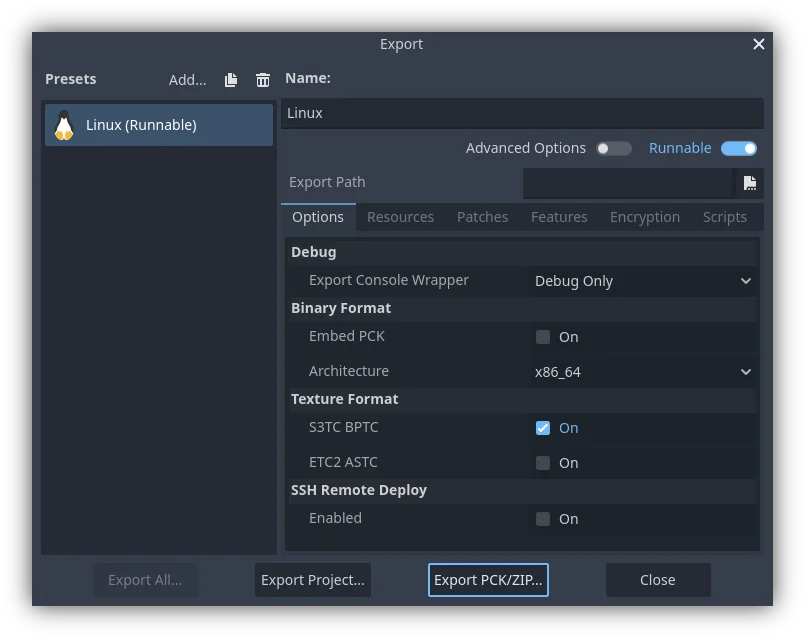

Exporting packs, patches, and mods
Use cases
Oftentimes, one would like to add functionality to one's game after it has been deployed.
Examples of this include...
Downloadable Content: the ability to add features and content to one's game.
Patches: the ability to fix a bug that is present in a shipped product.
Mods: grant other people the ability to create content for one's game.
These tools help developers to extend their development beyond the initial release.
Overview of PCK/ZIP files
Godot enables this via a feature called resource packs (PCK files,
with the .pck extension, or ZIP files).
Advantages:
incremental updates/patches
offer DLCs
offer mod support
no source code disclosure needed for mods
more modular project structure
users don't have to replace the entire game
The first part of using them involves exporting and delivering the project to players. Then, when one wants to add functionality or content later on, they just deliver the updates via PCK/ZIP files to the users.
PCK/ZIP files usually contain, but are not limited to:
scripts
scenes
shaders
models
textures
sound effects
music
any other asset suitable for import into the game
The PCK/ZIP files can even be an entirely different Godot project, which the original game loads in at runtime.
It is possible to load both PCK and ZIP files as additional packs at the same time. See PCK versus ZIP pack file formats for a comparison of the two formats.
See also
If you want to load loose files at runtime (not packed in a PCK or ZIP by Godot), consider using Runtime file loading and saving instead. This is useful for loading user-generated content that is not made with Godot, without requiring users to pack their mods into a specific file format.
The downside of this approach is that it's less transparent to the game logic, as it will not benefit from the same resource management as PCK/ZIP files.
Security concerns
It is important to note that loading PCK files for patches, mods, or extra content like expansions, will require you to code a system to automatically load files based on their location, and possibly name. This is a security vulnerability in three scenarios. One, a user downloads a mod with malicious code. Two, a malicious program already exists on an end user's PC and has replaced the PCK file with a malicious copy. Three, you are distributing patch PCK files through a game launcher and the system has become compromised.
Take this into consideration when determining how to use PCK files in a project. For situations where you have a patching system via a launcher, consider using asymmetric cryptography. You could store the public key in the main PCK, and sign patch or expansion PCK files with the private key. See the Crypto class for more information.
Copyright concerns
If you want to use PCK files to distribute extra paid content, such as expansions, keep in mind that Godot provides no out-of-the-box way to prevent someone from copying the PCK file, and putting it on another person's computer. Any kind of DRM system is your responsibility to implement if that's what you want.
Generating PCK files
In order to pack all resources of a project into a PCK file, open the project and go to , select an export preset, and click on .

Another method would be to export from the command line
with --export-pack. The output file must with a .pck or .zip
file extension. The export process will build that type of file for the
chosen platform.
Patch PCK files
Generating Patch PCK files
To create a PCK file that only contains resources not present in the original release of a project, you would create a patch PCK file. This could be used for patches, mods, or expansions. For this to work you'll first need to have a PCK file for your project at the point of its initial release.
To generate a patch PCK file, within the export menu, and with your desired preset selected, click on the tab. At the bottom is the Base Packs section. Click on the button, then navigate to the PCK file you exported that contains everything in your project for its initial release.
Now, when you go to export a PCK file of your project again, if you have the button selected, only resources that have changed will be exported in the PCK file.
You can also add any patches you export to your base packs for future use. For
example, adding patch.pck will ensure that patch2.pck will not include any
resources from that first patch.
Delta encoding
Patch PCK files can be made smaller through the use of delta encoding. This makes it so that only the parts of a file that have been changed are updated. This does have a drawback of longer load times for the resources that are updated, and each patch for a resource cumulatively increases its load time.
There are two settings for delta encoding in addition to the filters:
Delta Encoding Compression Level: Controls how much compression is applied to the files. We do not recommend any more than the default of 19. Beyond that more memory is needed for export and import for significantly fewer gains. Any positive values will have the same decompression speed, however export will take longer the higher the number is. Negative values enable fast mode, which means larger files, but the decompression speed is higher.
Delta Encoding Minimum Size Reduction: Controls how much size has to be saved at minimum for compression to be used on an individual file. For example, at a level of 10%, if the file size can only be reduced by 5%, then the file won't use delta encoding.
The default compression level, 19, is the highest recommended level.
For the smallest patch size possible we recommend turning off compression for any resources you want to patch. Even if your base PCK files were compressed that shouldn't cause an issue.
There are several places compression can be disabled for different resources:
Import settings related to compression on individually imported resources, such as translation or 3D model files
Compress Binary Resources in the editor settings
GDScript Export Mode in the tab of an export preset
Note
After disabling Compress Binary Resources you must delete the contents of
your projects .godot/imported/ folder, then closing and open the project
again to re-generate it.
It's important to note that when you export a delta encoded patch on top of previous patches, the packs you list under Base Packs in the tab must be the exact same files that are loaded by the game at runtime, in the exact order they are loaded in. Re-exporting previous versions may end up being slightly different, due to non-determinism in Godot's export process, which can cause the patching to fail. This only applies to delta encoded patches, regular ones don't have this issue.
Opening PCK or ZIP files at runtime
To load a PCK or ZIP file, one uses the ProjectSettings singleton. The following
example expects a mod.pck file in the directory of the game's executable.
The PCK or ZIP file contains a mod_scene.tscn test scene in its root.
func _your_function():
# This could fail if, for example, mod.pck cannot be found.
var success = ProjectSettings.load_resource_pack(OS.get_executable_path().get_base_dir().path_join("mod.pck"))
if success:
# Now one can use the assets as if they had them in the project from the start.
var imported_scene = load("res://mod_scene.tscn")
private void YourFunction()
{
// This could fail if, for example, mod.pck cannot be found.
var success = ProjectSettings.LoadResourcePack(OS.GetExecutablePath().GetBaseDir().PathJoin("mod.pck"));
if (success)
{
// Now one can use the assets as if they had them in the project from the start.
var importedScene = (PackedScene)ResourceLoader.Load("res://mod_scene.tscn");
}
}
Warning
By default, if you import a file with the same file path/name as one you already have in your project, the imported one will replace it. This is something to watch out for when creating DLC or mods. You can solve this problem by using a tool that isolates mods to a specific mods subfolder.
However, it is also a way of creating patches for one's own game. A PCK/ZIP file of this kind can fix the content of a previously loaded PCK/ZIP (therefore, the order in which packs are loaded matters).
To opt out of this behavior, pass false as the second argument to
ProjectSettings.load_resource_pack().
Note
For a C# project, you need to build the DLL and place it in the project directory first.
Then, before loading the resource pack, you need to load its DLL as follows:
Assembly.LoadFile("mod.dll")
Troubleshooting
If you are loading a resource pack and are not noticing any changes, it may be due to the pack being loaded too late. This is particularly the case with menu scenes that may preload other scenes using preload(). This means that loading a pack in the menu will not affect the other scene that was already preloaded.
To avoid this, you need to load the pack as early as possible.
To do so, create a new autoload script and
call ProjectSettings.load_resource_pack()
in the autoload script's _init() function, rather than _enter_tree()
or _ready().
Modding considerations
If one wishes to support mods for their game, they will need their users to create similarly exported files. Assuming the original game expects a certain structure for the PCK's resources, and/or a certain interface for its scripts, then one of two things has to be done.
- The developer must document these expected structures/
interfaces, expect modders to install Godot Engine, and then also expect those modders to conform to the documentation's defined API when building mod content for the game (so that it will work). Users would then use Godot's built in exporting tools to create a PCK file, as detailed above.
- The developer uses Godot to build a GUI tool for adding their exact API
content to a project. This Godot tool must either run on a tools-enabled build of the engine or have access to one (distributed alongside or perhaps in the original game's files). The tool can then use the Godot executable to export a PCK file from the command line with OS.execute(). The game itself shouldn't use a tool-build of the engine (for security), so it's best to keep the modding tool and game separate.